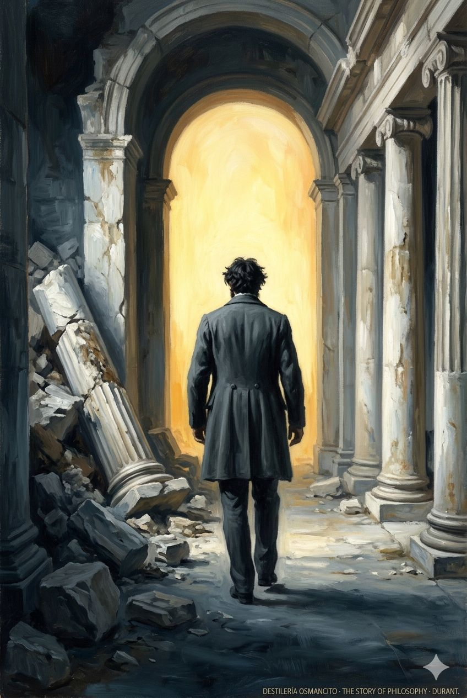
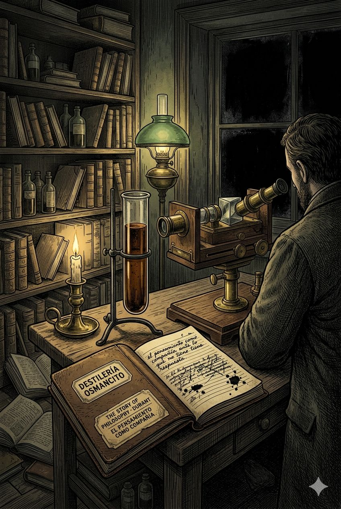

Un libro cerrado sobre una mesa de trabajo de piedra gris, visto ligeramente desde arriba. La cubierta es de tela azul pizarra oscuro con letras grabadas en oro mate: THE STORY OF PHILOSOPHY en posición dominante, centrado y grande. Debajo, en tipografía más pequeña de imprenta del XIX: Edición Crítica. El elemento visual en cubierta es una columna griega partida por la mitad — la mitad superior perfecta, la mitad inferior en ruinas — que sugiere la tensión entre el ideal filosófico y su realización histórica. La columna no es decorativa: ocupa el centro de la cubierta como símbolo de lo que el libro estudia. La materialidad de la cubierta es tela entelada con letras en relieve dorado, ligeramente desgastada en las esquinas. La superficie es una mesa de escritorio de piedra con algunos papeles parcialmente visibles en los bordes, bajo luz de tarde desde la izquierda.
Fase 0 · Recepción de Materia Prima
Registro de Entrada
Materia prima recibida. Iniciando registro. Recepción completa. El Alambique puede operar.
TítuloThe Story of Philosophy
AutorWill Durant
Año de primera edición1926 (segunda edición 1933)
GéneroHistoria de la filosofía — ensayo de divulgación de alta factura
Palabra más frecuente con contenidoman — el ser humano como pregunta y como respuesta; coincide con lo que el corpus declara pero también expone su sesgo: el pensador universal es, casi sin excepción, un hombre europeo
Concentración de destilación~14.2x — producto en torno a 13.000 palabras sobre 184.500 del corpus
Idioma del corpusInglés
Idioma del productoEspañol
Sinopsis y Figuras Clave
Durant recorre diez filósofos capitales de Occidente — de Platón a Dewey — con el propósito declarado de hacer la filosofía accesible a quien no es filósofo de oficio. El libro no es un manual ni un compendio neutral: es una galería de retratos, cada uno iluminado por la convicción de que el pensamiento filosófico es inseparable de la vida, el carácter y la época de quien lo produce. La tesis implícita es que la filosofía es, ante todo, un acto de amor hacia la sabiduría —y que ese amor puede transmitirse.
Lo que unifica el corpus no es un argumento sino un método: Durant presenta a cada filósofo como héroe intelectual cuya grandeza se prueba en la lucha contra la oscuridad de su tiempo. El resultado es una obra que siente más como biografía apasionada que como historia académica.
PlatónEl origen: la forma pura del proyecto filosófico, la política como ética ampliada
AristótelesEl sistematizador: la razón como método universal
Francis BaconEl pivote entre escolástica y ciencia moderna
SpinozaEl hereje sereno: Dios como naturaleza, la libertad como comprensión
VoltaireEl guerrero ilustrado: la ironía como arma política
KantEl arquitecto del pensamiento moderno
SchopenhauerEl pesimista lúcido: la voluntad detrás de la razón
SpencerEl darwinista social: evolución como teodicea secular
NietzscheEl iconoclasta: el poder como valor supremo
Santayana / James / DeweyLa filosofía americana como pragmatismo y experiencia
Materias Primas Dominantes
¿Puede el pensamiento individual transformar la civilización, o la civilización produce el pensamiento que necesita? Durant oscila permanentemente entre el culto al genio filosófico y la consciencia de que cada sistema es hijo de su momento histórico.
¿La sabiduría es comprensible para todos, o su divulgación inevitablemente la traiciona? El libro entero es una apuesta por que sí, pero la elegancia con que Durant simplifica a Kant o a Spinoza roza siempre el peligro de la distorsión.
¿Puede la filosofía —sin Dios, sin iglesia— devolverle sentido a una vida secular? La pregunta recorre el libro desde la Introducción hasta las últimas páginas sobre Dewey, sin recibir nunca respuesta directa.
Imagen de Recepción

Un corredor de mármol griego en ruinas, visto desde el interior hacia una abertura de luz intensa al fondo — la columna rota a la izquierda, la arquitectura perfecta a la derecha, y entre ambas un hombre de espaldas que camina hacia la luz sin que podamos ver su rostro ni su destino. Época ambigua: el corredor es antiguo pero la silueta viste una levita del XIX. Tensión visual: la arquitectura promete totalidad; el hombre la atraviesa solo.
Fase 1 · Módulo Alambique
Destilación
Materia prima en el alambique. Comenzando destilación. Barrica por barrica. Componiendo el destilado maestro.
Destilado Maestro
Hay un hombre, en algún punto entre los siglos V a.C. y el XX, sentado a solas con una pregunta que no puede dejar en paz. No es el mismo hombre —es Platón junto al mar Egeo, es Spinoza en su cuarto de La Haya, es Nietzsche en Turín hundiéndose en la locura — pero la postura es idéntica: alguien que se niega a aceptar la realidad tal como viene envasada por su tiempo, y que construye en cambio un sistema desde cero, como si pudiera hacer el mundo de nuevo.
Este libro los persigue a todos. Los alcanza en sus gabinetes y en sus exilios, en sus amores fracasados y en sus enfermedades, en la crueldad con que sus épocas los tratan y en la improbable gloria que reciben después de muertos. No pretende ser neutro: elige a los grandes, los presenta como héroes, y convierte la historia de las ideas en algo parecido a una épica. La filosofía, en estas páginas, no es un sistema de categorías sino una forma de estar vivo — la única forma, sugiere el libro, que está a la altura de la dignidad humana.
Lo que se destila a lo largo de once capítulos es una pregunta que ninguno de los filósofos reunidos aquí logra cerrar del todo: ¿puede la razón sola — sin fe, sin iglesia, sin certezas heredadas — devolverle al hombre un sentido que soporte el peso de la existencia? Platón dice sí, con la condición de que la razón governe; Schopenhauer dice no, y lo demuestra con dolor; Nietzsche dice que la pregunta está mal planteada, que lo que importa no es el sentido sino el poder; Dewey dice que la pregunta misma es demasiado europea y que hay que sustituirla por la acción.
El libro no decide. Lo que hace, en cambio, es algo más difícil: hace que el lector desee estar en ese corredor de columnas rotas, caminando hacia la luz aunque no sepa qué hay del otro lado. La filosofía aparece aquí no como un conjunto de respuestas correctas sino como el acto mismo de hacerse la pregunta con suficiente rigor como para que no se cierre sola. Y en ese sentido, después de cerrar el libro, la pregunta sigue abierta — y eso es, probablemente, lo mejor que un libro de filosofía puede lograr.
Barricas
Barrica 0
Introducción — Sobre los Usos de la Filosofía
La promesa que el corpus hace al lector antes de empezar a cumplirla
Durant declara su apuesta desde el principio: la filosofía no es un lujo académico sino la forma más alta de vivir. Contra quienes la acusan de esterilidad, argumenta que toda gran ciencia nació de ella, y que sin ella el conocimiento se fragmenta en especialidades sin perspectiva. La Introducción traza el marco afectivo del libro entero — no un prólogo sino una invitación — y promete una travesía por los grandes sistemas capaz de devolver al lector algo que la educación moderna le ha quitado: el sentido de que pensar bien es, en sí mismo, una forma de vivir bien.
El precio de la especialidad
Durant describe al científico especialista como alguien que sabe todo de nada: un hombre que domina su campo con precisión quirúrgica pero que no puede responder ninguna de las preguntas que hacen que una vida valga la pena. La filosofía, argumenta, es lo que conecta los fragmentos — la arquitectura que convierte ladrillos en casa.
La verdad no te hará rico, pero te hará libre
En pocas líneas, Durant condensa el programa moral del libro entero: la búsqueda del saber no promete recompensa material, pero promete algo más escaso — la libertad de ver las cosas tal como son, sin el filtro del miedo ni del interés. Es una promesa que el libro tardará cuatrocientas páginas en demostrar que puede o no puede cumplirse.
Barrica 1
Capítulo I — Platón
El origen: cuando la filosofía quiso gobernar el mundo
Durant reconstruye a Platón como respuesta a la catástrofe de Atenas: la derrota contra Esparta, la ejecución de Sócrates, el desmoronamiento de la democracia. La pregunta que impulsa toda la obra platónica es política antes que metafísica: ¿por qué los mejores gobiernan tan mal y los peores con tanta facilidad? La República emerge como el más audaz experimento de ingeniería social de la antigüedad: una ciudad donde la virtud no es accidente sino arquitectura. Durant presta especial atención a la psicología platónica — incluyendo una anticipación asombrosa del psicoanálisis — y al colapso de los experimentos políticos en Siracusa. El capítulo termina con la muerte silenciosa de Platón en un banquete nupcial, imagen de una vida que encontró cómo envejecer con dignidad.
El filósofo-rey como profecía imposible
Durant expone el núcleo utópico de Platón con lucidez y sin crueldad: la idea de que quien mejor puede gobernar es precisamente quien menos desea hacerlo. El filósofo, absorto en la contemplación de las ideas eternas, gobierna como un deber — no como un placer. Lo que Durant no dice, pero deja ver, es la tragedia implícita: ese sistema sólo funciona si quien tiene el poder es exactamente la persona que no lo quiere. Y nadie puede garantizar eso.
Sócrates como método
La figura de Sócrates aparece aquí no como mártir sino como técnica: el hombre que no sabe nada pero sabe preguntar. Durant explica la ironía socrática — fingir ignorancia para llevar al interlocutor hasta la contradicción de sus propias certezas — y muestra cómo ese método sigue siendo, siglos después, el único antídoto conocido contra la arrogancia disfrazada de seguridad.
El psicoanálisis antes de Freud
En un pasaje notable, Durant señala que Platón describió los sueños como ventana al deseo reprimido, que el alma tiene estratos donde lo proscrito sobrevive dormido, y que el profeta y el genio rozan la misma zona oscura que el enfermo mental. Todo esto dos mil años antes de Viena. La observación no es anacronismo — es reconocimiento de que ciertas verdades sobre la mente humana esperaban ser nombradas, y Platón las tocó de pasada sin saber del todo lo que tocaba.
Morir bien como forma de vivir bien
La imagen final del capítulo — Platón de ochenta años, que se retira a dormir en un rincón del banquete y por la mañana ya no despierta — es la más silenciosa del libro. No hay agonía ni discurso. La muerte llega como consecuencia lógica de haber sabido envejecer. Durant no lo comenta. No necesita.
Barrica 2
Capítulo II — Aristóteles y la Ciencia Griega
La razón como método universal: el primer científico
Si Platón soñó el mundo ideal, Aristóteles catalogó el real. Durant presenta a Aristóteles como el fundador de casi todas las ciencias — lógica, biología, física, política, ética, estética — no como acumulación de datos sino como arquitectura del conocimiento: la convicción de que todo puede ser clasificado, analizado y comprendido. El capítulo traza la tensión entre el Aristóteles biólogo, observador paciente de la naturaleza, y el Aristóteles metafísico, que necesita un primer motor inmóvil para que el sistema no se derrumbe. La relación con Alejandro — alumno formado para la grandeza, que resultó demasiado grande para su maestro — aparece como la ironía más brutal del capítulo: el filósofo enseñó a dominar el mundo al hombre que dominaría el mundo sin necesitar filosofía.
La felicidad como actividad, no como estado
Durant explica la eudaimonia aristotélica con precisión que todavía duele: la felicidad no es un lugar al que se llega sino algo que se hace. No es tener sino funcionar bien — como los dientes que mastican o el ojo que ve. El hombre feliz es el que ejerce su función más alta con excelencia. Que esa función sea la razón no hace la idea más fácil de vivir, pero la hace imposible de refutar del todo.
El Primer Motor que no se mueve
En la metafísica aristotélica hay una figura que Durant toca con cuidado: Dios como pensamiento que se piensa a sí mismo, inmóvil, perfecto, que mueve todo lo que existe no empujando sino atrayendo — como el amado mueve al amante sin saber que existe. Es una de las ideas más extrañas de la historia de la filosofía. Y también, en cierta manera, una de las más honestas: un Dios que no interviene porque la perfección no necesita hacer nada.
Lo que la política le debe al clima
Durant cita la teoría geopolítica de Aristóteles — que los pueblos del norte son valientes pero sin inteligencia, los del sur inteligentes pero cobardes, y sólo los griegos tienen ambas cosas — y la presenta sin ironía explícita. Pero la ironía está en el aire: el primer científico de Occidente produce, al hablar de política, el primer ejemplo documentado de sesgo de confirmación cultural elevado a ley natural.
Barrica 3
Capítulo III — Francis Bacon
El pivote: la ciencia como poder, el poder como ambición
Bacon es el capítulo más incómodo del libro porque su protagonista es un hombre que no alcanza la altura moral de lo que piensa. Durant lo presenta con una honestidad que roza la incomodidad: el gran reformador del método científico era un cortesano calculador, un político que vendía su influencia, un juez que tomó sobornos y cayó en desgracia. Y sin embargo, la idea central de Bacon — que el conocimiento sólo vale si transforma la realidad, que el saber es poder sobre la naturaleza — resuena en cada laboratorio, en cada línea de código, en cada política pública basada en datos. El hombre fue menor que su proyecto. El proyecto sobrevivió al hombre sin necesitarlo.
Saber es poder, y el poder no tiene escrúpulos
Durant expone el Novum Organum como el manifiesto de la modernidad: en lugar de deducir verdades desde axiomas heredados, observar, experimentar, inducir. La ciencia no como contemplación sino como intervención. Lo que Durant no subraya, pero el lector puede ver, es que esta idea es perfectamente neutral respecto de su uso: sirve para curar enfermedades y para fabricar bombas con igual eficiencia.
Los ídolos de la tribu
La taxonomía baconiana de los errores del entendimiento humano — ídolos de la tribu, de la caverna, del foro, del teatro — sigue siendo el más preciso catálogo de las formas en que la mente se engaña a sí misma que se ha producido en la historia de la filosofía. Cada categoría reconoce un vicio específico: la tendencia a ver lo que se espera, el encierro en la perspectiva propia, la corrupción del lenguaje, la tiranía de los sistemas heredados. Cuatrocientos años después, la neurociencia y la psicología cognitiva no han hecho más que añadir datos a ese esquema.
Barrica 4
Capítulo IV — Spinoza
El hereje sereno: Dios como naturaleza, la libertad como comprensión
Spinoza es el momento más alto del libro. Durant lo sabe y lo trabaja con más cuidado que a ningún otro: la épica del pueblo judío en el exilio, el joven Baruch expulsado de su propia comunidad por pensar con demasiada limpieza, el pulidor de lentes que construyó en silencio la Ética como un sistema geométrico. La tesis central — que Dios y la Naturaleza son la misma cosa, que todo cuanto existe es una modificación de una única sustancia infinita — escandaliza a su tiempo y resulta, cuatro siglos después, casi imprescindible para pensar el universo sin teología. Durant articula la libertad spinoziana como comprensión: el hombre es libre no cuando escapa a las causas sino cuando las entiende. No la libertad de la voluntad sino la libertad del conocimiento.
Excomulgado por pensar en voz alta
La escena del herem — la excomunión más severa que la comunidad judía de Ámsterdam había pronunciado jamás, contra un joven de veintitrés años del que nadie ha conservado el crimen exacto — es uno de los momentos más perturbadores del libro. No hay acusación específica. Hay el miedo de una comunidad frágil a ser contaminada por una mente que no puede detenerse. Spinoza recibió el golpe y siguió pensando. Eso es todo. Y quizá eso es suficiente.
sub specie aeternitatis — bajo la mirada de la eternidad
La idea más extraña y más hermosa de Spinoza: que el entendimiento puede alcanzar una perspectiva desde la cual el tiempo, el sufrimiento y la muerte individual pierden su carácter absoluto — no porque desaparezcan sino porque se revelan como partes de un orden que los contiene. No es resignación ni estoicismo: es la propuesta de que comprender profundamente algo equivale a amar lo que uno comprende. Amor intellectualis Dei. El amor intelectual de Dios. Que podría también llamarse: el amor intelectual de todo.
El hombre que más se ha acercado a Dios
Durant cita el discurso de Renan en la inauguración de la estatua de Spinoza en La Haya: que quizá la visión más verdadera de Dios que haya tenido ningún ser humano ocurrió en esa habitación de pulidor de lentes. Es una frase que Durant deja caer sin comentario. Tiene la honestidad de reconocer que algunas ideas son demasiado grandes para ser glosadas.
Barrica 5
Capítulo V — Voltaire y la Ilustración Francesa
La ironía como arma: cuando el pensamiento se volvió político
Voltaire es el filósofo más contradictorio del libro: feo, vanidoso, deshonesto, obsceno — y también el hombre que más hizo por la libertad de pensamiento en el siglo XVIII. Durant lo retrata con generosidad calculada: reconoce los defectos personales y los descarta como irrelevantes frente a la energía creativa. Noventa y nueve volúmenes escritos con una pluma que nunca descansó; batallas contra la tortura, la superstición y el fanatismo que otros no se atrevían a dar; la ironía perfecta de Candide — el optimismo leibniziano pulverizado por el terremoto de Lisboa. Lo que el capítulo revela es que Voltaire no fue un sistema sino un proyecto: destruir lo que bloqueaba el pensamiento libre, con la esperanza de que algo mejor crecería en el espacio vacío.
Écraser l'infâme — aplastemos lo infame
El lema de Voltaire — aplastemos la infamia — tenía un blanco concreto: la superstición religiosa organizada, el fanatismo que quemaba herejes y torturaba inocentes. Durant lo presenta como el equivalente filosófico de una guerra: no se trata de persuadir al adversario sino de destruirlo. Voltaire eligió el arma de la ironía porque es la más difícil de contrarrestar: no se puede quemar una carcajada.
Candide como vacuna
En pocas páginas, Durant explica por qué Candide sigue siendo el mejor antídoto contra el optimismo irresponsable: cada vez que el tutor Pangloss insiste en que todo sucede para bien en el mejor de los mundos posibles, la realidad introduce un terremoto, una masacre, una violación, un naufragio. La filosofía del bienestar necesario se rompe contra la casualidad del sufrimiento. No queda consuelo filosófico. Queda cultivar el jardín.
Barrica 6
Capítulo VI — Immanuel Kant y el Idealismo Alemán
El arquitecto: la razón examinada por sí misma
Kant es el capítulo más difícil del libro y Durant lo sabe: advierte al lector, rodea al filósofo de Königsberg por varios flancos antes de atacarlo directamente, y admite que ningún resumen hace justicia a la Crítica de la Razón Pura. Lo que logra, sin embargo, es extraordinario: hacer comprensible la revolución copernicana kantiana — que no son los objetos los que forman nuestra mente, sino que es nuestra mente la que forma la experiencia de los objetos — y mostrar sus consecuencias devastadoras para toda metafísica anterior. Kant cierra el paso a conocer la cosa-en-sí, pero abre una ética del deber que Durant trata con respeto notable: el imperativo categórico como la idea de que sólo es moral aquello que puede convertirse en ley universal.
Despertar del sueño dogmático
Kant, según su propia confesión, fue despertado de su "sueño dogmático" por Hume — quien demostró que la causalidad no es una ley del universo sino un hábito de la mente. Durant convierte esa frase en el momento de inflexión de la filosofía moderna: el momento en que el pensamiento se vuelve sobre sí mismo y descubre que no puede garantizar lo que había dado por garantizado. Después de Kant, toda metafísica necesita justificarse de otra manera.
Actúa como si tu acción pudiera ser ley universal
El imperativo categórico — la única formulación ética que Durant trata con reverencia casi incondicional — tiene la virtud y el defecto de su geometría: es perfecto en abstracto y casi imposible de aplicar en casos concretos. Durant lo presenta sin ironía. Pero el lector que ha llegado hasta Kant después de Spinoza, Voltaire y Bacon comprende la trampa: un sistema ético universal construido por un hombre que nunca salió de Königsberg.
Barrica 7
Capítulo VII — Schopenhauer
El pesimista lúcido: la voluntad como tirano invisible
Schopenhauer es el capítulo más sombrío y, curiosamente, uno de los más vitales. Durant presenta al filósofo como el primero en poner en el centro del sistema no la razón sino la voluntad — ese impulso ciego de existir y reproducirse que subyace a todo cuanto hacemos y que la razón no puede dominar sino sólo observar. El mundo es voluntad que se devora a sí misma: los organismos compiten, se destruyen y se reproducen en un ciclo que no tiene propósito ni dirección. La única salida que Schopenhauer concibe es el arte — la contemplación desinteresada que suspende momentáneamente la voluntad — y la ascesis, el renunciamiento budista. Durant reconoce la grandeza del diagnóstico aunque rechaza la cura: el pesimismo de Schopenhauer abrió la puerta a la psicología del inconsciente y a la crítica de la razón pura como facultad soberana.
La voluntad como el oscuro motor de todo
Schopenhauer describe la voluntad de vivir no como una fuerza noble sino como un tirano ciego: el animal que come al animal, el hombre que destruye al hombre, el organismo que se reproduce para que el ciclo continúe sin preguntarse por qué. Lo que Durant extrae de este pesimismo brutal es algo sorprendente: una descripción del deseo más honesta que cualquier teoría del progreso. Schopenhauer dice lo que nadie quiere oír, y por eso sus lectores más fieles suelen ser, paradójicamente, los más vivos.
El arte como único momento libre
En la estética schopenaueriana, el arte es el único instante en que la voluntad cede: el contemplador de una gran obra musical deja de desear, de competir, de tener miedo. Existe, por un momento, fuera del tiempo y fuera de la voluntad. Durant encuentra aquí una de las pocas ideas que le permiten matizar el pesimismo de Schopenhauer sin negarlo: el arte no redime la existencia, pero la hace, por intervalos, soportable con dignidad.
El profeta del inconsciente
Durant señala, con precisión que no escatima el crédito, que Schopenhauer describió el inconsciente como motor del comportamiento humano cincuenta años antes de Freud, y que la voluntad ciega de reproducirse prefigura el instinto sexual como energía primaria. No es influencia directa — es que Schopenhauer tenía razón sobre algo que tardó medio siglo en tener nombre.
Barrica 8
Capítulo VIII — Herbert Spencer
El sistema total: cuando Darwin se convirtió en teodicea
Spencer es el capítulo que Durant trata con más ambivalencia. El más admirado de su tiempo — el filósofo más leído del siglo XIX en el mundo anglosajón — aparece aquí como el gran sistematizador de Darwin, el hombre que intentó reducir toda la realidad a la ley de la evolución: lo inorgánico, lo orgánico, lo psicológico, lo social, lo moral. El proyecto es formidable en su escala y está, en el momento en que Durant escribe, ya parcialmente en ruinas. La "Filosofía Sintética" de Spencer olía demasiado a la industria victoriana que la financiaba: el progreso como ley natural equivalía, en la práctica, al darwinismo social — los pobres son pobres porque son menos aptos, y el Estado no debe interferir en la selección natural del mercado.
La evolución como todo, inclusive la moral
Spencer extendió la idea de la evolución más allá de la biología hasta hacerla cosmovisión: no sólo los organismos evolucionan sino las sociedades, las mentes, los sistemas éticos. Lo admirable es la audacia; lo inquietante es la implicación: si todo evoluciona hacia mayor complejidad, entonces lo que existe hoy es más apto que lo que existía antes. La historia como progreso garantizado. La injusticia presente como peldaño necesario. Es la idea más peligrosa del libro.
Lo Incognoscible como última trinchera
Cuando Spencer no puede explicar el origen del universo ni la naturaleza última de la fuerza, invoca Lo Incognoscible — una zona que la ciencia no puede penetrar pero que la religión, en su mejor versión, venera. Durant trata esta idea con una amabilidad que tiene algo de lástima: es la solución de un hombre que necesita un Dios pero no puede creer en ninguno, y que nombra la ignorancia como si nombrarla fuera lo mismo que resolverla.
Barrica 9
Capítulo IX — Friedrich Nietzsche
El iconoclasta: cuando el poder se declaró el único valor
Nietzsche es el más peligroso y el más brillante del libro, y Durant lo sabe. Lo presenta como hijo de Darwin y hermano de Bismarck — alguien que extrajo las consecuencias que los darwinistas ingleses no se atrevieron a extraer — y teje la biografía con un cuidado que roza lo compasivo: el joven genio, la amistad rota con Wagner, el aislamiento creciente, las enfermedades, los libros escritos en soledad para lectores que tardarían décadas en aparecer, la locura final en Turín. El Nietzsche filosófico — el anticristo, el genealogista de la moral, el profeta del superhombre — convive en el capítulo con el Nietzsche enfermo que le pregunta a su hermana si no son felices sin entender sus propias lágrimas.
La moral como invención de los débiles
La tesis más escandalosa de Nietzsche — que la ética del amor al prójimo, la humildad y la compasión es una rebelión de esclavos que convirtió sus limitaciones en virtudes — Durant la expone con claridad y sin condenarla de antemano. Lo que hace es más inteligente: dejar que el lector llegue solo a la pregunta obvia: si la moral es una ficción útil para los débiles, ¿qué ocurre cuando los fuertes toman ese argumento como licencia? La historia del siglo XX responde la pregunta. Durant escribe en 1926. No puede saberlo aún.
El superhombre como pregunta, no como respuesta
Durant evita la trampa de interpretar el Übermensch como el antepasado del nazismo — interpretación que su hermana Elisabeth haría todo lo posible por facilitar. Lo presenta como ideal filosófico: el hombre que se ha dado sus propios valores, que no necesita el aval de la tradición ni de Dios para vivir con plenitud. La idea es seductora y vacía al mismo tiempo. ¿Quién decide qué valores adoptar? Nietzsche no lo dice. El silencio es la falla más grande del sistema.
Lisbeth, ¿no somos felices?
La escena final — Nietzsche ya demente, sin entender por qué llora su hermana, preguntando con inocencia absoluta si no son felices — es la más dolorosa del libro. Durant la pone sin adorno. El hombre que proclamó la voluntad de poder como único valor auténtico murió sin voluntad, sin poder, sin memoria de haberlos proclamado. Es posible que eso sea una refutación. Es posible que no sea nada. El silencio de Durant ante esa imagen es la respuesta más honesta.
Barrica 10
Capítulo X — Filósofos Europeos Contemporáneos
Bergson, Croce, Russell: la filosofía fragmentada en modernidad
Este capítulo es el más plural y el más tenso: tres figuras que no forman escuela entre sí pero que Durant lee como síntomas del momento en que la filosofía deja de pretender ser sistema total y acepta ser perspectiva parcial. Bergson lleva el élan vital contra el mecanicismo — la vida como impulso que no puede ser reducido a física. Croce construye una filosofía del espíritu donde la belleza y la historia son categorías fundamentales. Russell desmonta con lógica quirúrgica las pretensiones de los sistemas anteriores y empieza a construir una filosofía del lenguaje que Durant trata con respeto mezclado con reservas: el análisis lógico como fin en sí mismo le parece, en el fondo, demasiado estrecho para contener la vida.
La vida como impulso que los mecanismos no capturan
Bergson argumenta que la inteligencia, por su naturaleza, sólo puede capturar lo que está detenido — como una cámara fotográfica que no muestra el movimiento sino instantes. La vida, en cambio, es duración, flujo, cambio continuo. La intuición — no la razón — es el único instrumento que puede acompañarla. Durant simpatiza con esta idea porque es coherente con su propia convicción de que la filosofía debe sentirse, no sólo entenderse.
Russell como cirujano del pensamiento
Durant admira a Russell pero desconfía de su frialdad: el análisis lógico resuelve problemas falsos pero crea el riesgo de que la filosofía se convierta en gramática. Russell, que vivió hasta los noventa y siete años cambiando de opinión sobre casi todo, es presentado aquí como reformador moral además de lógico — sus posiciones sobre la guerra, el sexo y la educación le costaron puestos académicos y le ganaron enemigos de cada lado. La imagen que Durant deja es la del hombre más inteligente de su generación que usó esa inteligencia para decir verdades que nadie quería oír.
Barrica 11
Capítulo XI — Filósofos Americanos Contemporáneos
Santayana, James, Dewey: cuando la filosofía se hizo pragmática
El capítulo final tensa la dualidad que recorre todo el libro: la filosofía europea, heredera de la metafísica y el sistema, contra la filosofía americana, nacida de la experiencia, la acción y la utilidad. Santayana — español trasplantado, enamorado del mundo grecolatino y de la tradición inglesa — representa la elegancia melancólica de quien piensa en América pero no es de allí. James — el pragmatista que convirtió la verdad en aquello que funciona — es la voz más americana de todas, la que habla en lenguaje de mercado sin perder la profundidad. Dewey — el más sistemático y menos brillante de los tres — construye una filosofía de la educación y la democracia que Durant admira con más calor que con entusiasmo.
La verdad como lo que funciona
James define la verdad con una audacia que escandaliza a los filósofos europeos: una idea es verdadera si produce consecuencias útiles en la experiencia. No hay verdades eternas — hay verdades que sirven y verdades que no sirven, y las primeras son las que sobreviven. Durant trata esta idea con respeto pero con límites: el pragmatismo explica bien cómo se viven las ideas pequeñas, pero flaquea ante las preguntas que importan de verdad y que no tienen utilidad práctica inmediata, como si Dios existe o si la vida tiene sentido.
Santayana, el extranjero que entendió América mejor que los americanos
Durant observa algo notable sobre Santayana: que su distancia de América — vivida desde dentro, sentida desde fuera — le dio la perspectiva que los nativos no pueden tener. Sus libros sobre la razón en la sociedad, la religión y la ciencia son, en el fondo, los de alguien que puede ver el experimento americano con los ojos del Viejo Mundo sin los prejuicios del Viejo Mundo. Es la ventaja del que pertenece a dos lugares y no es completamente de ninguno.
Cartografía
Densidad
Las barricas de mayor concentración son Spinoza, Nietzsche y Schopenhauer — en ese orden. Spinoza porque Durant lo trabaja con una profundidad que no alcanza en ningún otro capítulo, entendiendo que allí está el corazón filosófico más original del libro. Nietzsche porque la biografía y el pensamiento se alimentan mutuamente con una intensidad que el propio autor no puede resistir. Spencer y el capítulo de contemporáneos americanos son las barricas más diluidas: funcionan pero no brillan.
Materias Recurrentes
Tres imágenes reaparecen con constancia anómala: el hombre solo con su pensamiento contra el tiempo de su época; la tensión entre el sistema perfecto y la vida imperfecta de quien lo construye; y la pregunta sobre si la filosofía puede reemplazar a la religión como fuente de sentido. Cada filósofo del libro se enfrenta a esas tres imágenes, aunque ninguno lo reconozca explícitamente.
Tensiones Centrales
El corpus no resuelve si la grandeza del pensamiento depende o no del carácter del pensador. Bacon es el caso más agudo: sus ideas son revolucionarias, su vida es reprochable. ¿Importa la vida? Durant dice que no, pero su forma de narrar dice que sí. También queda sin resolver si la filosofía puede divulgarse sin traicionarse — si un libro como éste, que hace a Kant comprensible en veinte páginas, está sirviendo a la filosofía o sustituyéndola.
Voces y Presencias
Durant es la única voz real del libro. Los filósofos son sus personajes. Spinoza tiene la presencia más autónoma — Durant cede terreno y deja que la Ética hable con su propia geometría. Nietzsche tiene la presencia más dramática — la biografía se convierte en tragedia. Kant tiene la presencia más esquiva — Durant lo admira sin poder retratarlo con la misma calidez que a los demás.
Arco del Proceso
El argumento central — que la filosofía puede dar sentido a la vida secular — no se resuelve: se abre. El corpus comienza con la promesa de que la sabiduría ilumina la existencia y termina, con Dewey, en la propuesta de que lo que importa no es la sabiduría sino la acción transformadora. El arco va de la contemplación a la intervención sin decidir cuál es más valiosa. Esa indecisión es, probablemente, su mayor honestidad.
Nota de Cata
Tipo —Cognac de gran reserva. Añada imaginaria: 1926. Denominación de origen: Europa occidental, costa del Atlántico intelectual.
Notas de entrada —Roble viejo, cuero de biblioteca, vainilla de la ilustración. Un primer sorbo que promete más profundidad de la que el vaso parece contener. Calor que sube despacio.
Cuerpo —Redondo, generoso, con momentos de concentración excepcional — especialmente en las notas de Spinoza y de Nietzsche, donde el tanino se endurece y la complejidad se vuelve casi exigente. El capítulo Spencer introduce un corte ligeramente industrial, como si se hubiera mezclado algo demasiado joven en el blend.
Final —Largo, cálido, con resina de interrogante no resuelta. La pregunta sobre si la filosofía puede reemplazar a la religión queda en boca como el humo de un tabaco bueno: placentera, imprecisa, persistente. No hay amargura. Hay, en cambio, una nostalgia de algo que no se ha perdido sino que nunca estuvo del todo.
Maridaje —Con la duda de las tres de la madrugada. Con un lector que empieza a sospechar que las preguntas más importantes no tienen respuesta pero que vale la pena hacérselas con elegancia.
Imagen de Destilación
Una copa de cognac sobre una mesa de mármol fisurado en una sala de conferencias filosófica abandonada — pizarras llenas de fórmulas y flechas a medio borrar, ventanas altas con luz de tarde oblicua, polvo en suspensión visible en el aire. La copa está casi vacía, con el sedimento dorado en el fondo, y en su superficie refleja, invertida, una estantería de libros que no existe en la escena visible. No hay nadie. La silla más cercana está girada como si alguien se hubiera levantado hace un momento — o hace cien años.
Fase 2 · Módulo Control de Calidad
Inspección
Nave recibida. Iniciando inspección. Inspeccionando casco y quilla. Sondeando aguas profundas. Examinando al capitán y su sombra. Afinando la partitura. Emitiendo veredicto de zarpe.
Clasificación de Nave
El Galeón (bueno) con elementos de El Velero
Grande, sólido, cargado de valor real. Durant construyó una embarcación que prometía llevar mucha gente a aguas profundas y cumplió la promesa. El Velero aparece porque la calidad de la travesía depende parcialmente del viento del lector: quien llega sin ninguna filosofía puede naufragar en el Kant; quien llega con algo de preparación recibe cada capítulo como una habitación que ya sospechaba que existía.
Los Seis Estratos de Inspección
Estrato 1 — Casco y Quilla
El esqueleto argumental es sólido pero no simétrico. La tesis central — que la filosofía transforma vidas y que los grandes filósofos son los mayores benefactores de la humanidad — atraviesa todos los capítulos como una quilla constante. Los argumentos de soporte son biógrafo-filosóficos: cada capítulo une la vida del filósofo a su sistema para demostrar que el pensamiento emerge de la experiencia vivida. La arquitectura es seriada, no dialéctica: los capítulos no se refutan entre sí, se suman. Esto crea un casco resistente pero con un desequilibrio: el libro no tiene tesis final propia — termina sin decidir entre los sistemas que ha presentado. El órgano atrofiado es la crítica sistemática: Durant señala los errores de cada filósofo pero no construye desde esa crítica una posición filosófica propia. El casco aguanta la travesía. No está diseñado para la tormenta de la duda radical.
Estrato 2 — Corrientes y Vientos
El libro es hijo de 1926: el optimismo del período de entreguerras, la convicción de que el progreso intelectual y moral es posible, el proyecto ilustrado aún en pie antes del colapso de 1929 y del nazismo. Durant escribe desde la seguridad de que la razón puede más que la barbarie — una apuesta que la historia va a poner a prueba brutalmente en los quince años siguientes. Los vectores no reconocidos: el imperialismo cultural implícito — la filosofía que importa es la filosofía europea occidental, y de ella principalmente la de los grandes sistemas masculinos; y el clasismo epistémico — la búsqueda de sentido filosófico es presentada como aspiración universal pero los ejemplos de lectores son siempre de clase media ilustrada.
Estrato 3 — Arquitectura Naval
La asimetría más reveladora del libro es la distribución del afecto: Spinoza recibe una profundidad que ningún otro capítulo alcanza; Spencer recibe más páginas de las que su vigencia actual justificaría. Esta asimetría no es accidental — Spinoza es la proyección del ideal filosófico de Durant (el pensador que une rigor e integridad personal); Spencer es el filósofo más popular en el momento en que Durant escribe, y el libro necesita hablar de él para ser relevante en su época. La paradoja productiva: un libro que celebra la filosofía como camino a la sabiduría no puede explicar filosóficamente por qué elige a estos filósofos y no a otros. La selección es un argumento implícito que nunca se hace explícito.
Estrato 4 — Aguas Profundas
La ontología implícita de Durant es humanista y evolucionista: los seres humanos son capaces de mejorar, el pensamiento es su herramienta más alta, y la historia tiene una dirección, aunque no garantizada. La epistemología es empírico-histórica: Durant no construye teoría del conocimiento sino que asume que el acceso al pensamiento de otros es posible y enriquecedor. La ética implícita es aristocrática del espíritu — no de la sangre sino de la inteligencia: los grandes pensadores son superiores, y el libro es un acto de reverencia hacia esa superioridad. La sombra no reconocida: el libro asume que el placer estético e intelectual que Durant experimenta leyendo a los filósofos es transferible, que la mediación no distorsiona. Es posible que no lo sea.
Estrato 5 — El Capitán y su Sombra
Durant proyecta en cada filósofo una variación del mismo ideal: el hombre que piensa con rigor y vive con coherencia. Cuando un filósofo falla en la segunda condición — como Bacon — Durant lo nota con incomodidad. Cuando un filósofo la cumple de forma extraordinaria — como Spinoza — Durant lo trata con una devoción que roza lo religioso. El mecanismo de defensa dominante es la idealización selectiva: los errores de los filósofos amados se contextualizan; los de los filósofos que le generan distancia se presentan como límites del sistema. El arquetipo que emerge sin ser invocado es el del maestro: Durant escribe como alguien que quiere ser, para el lector, lo que Sócrates fue para sus discípulos — el que abre las puertas sin imponer la dirección.
Estrato 6 — Registro de Origen y Carga
Durant nació en 1885 en North Adams, Massachusetts, en una familia católica de trabajadores. Se formó en seminarios jesuitas antes de alejarse de la fe. Su trayectoria — de la devoción religiosa al humanismo secular — es el arco invisible que da forma al libro: la búsqueda de un sustituto del sentido religioso que sea intelectualmente honesto. La filosofía que Durant elige celebrar es precisamente la que puede hacer ese trabajo: Spinoza reemplaza a Dios con la Naturaleza; James reemplaza la fe con la utilidad; Dewey reemplaza la salvación con la educación. Las genealogías silenciadas: la filosofía no occidental no existe en este libro. El pensamiento budista, el confuciano, el islámico medieval — que produjeron figuras de igual o mayor envergadura — están ausentes porque el proyecto de Durant es fundamentalmente occidental y porque en 1926 esa ausencia no se sentía como tal.
Sinopsis del Viaje
Este galeón zarpó con una promesa enorme — llevar la sabiduría de los siglos hasta el lector no especializado — y cumplió esa promesa con una generosidad que no tiene precedente en la historia de la divulgación filosófica. La carga es real, sustanciosa, y en sus mejores momentos (Spinoza, Nietzsche, Schopenhauer) alcanza una profundidad que los manuales académicos no siempre alcanzan. El capitán es visible en cada línea: apasionado, parcial, incapaz de fingir indiferencia ante lo que ama.
Las grietas son también visibles. La carga declarada — una historia de la filosofía — no es del todo lo que el barco transporta: es, en realidad, una autobiografía intelectual del capitán disfrazada de historia universal. Durant no nos cuenta la filosofía occidental; nos cuenta su relación con ella, y esa relación tiene puntos ciegos que el libro no examina. La selección de filósofos, la profundidad relativa de cada capítulo, el tono de admiración o de reserva — todo eso es Durant, no la filosofía.
Lo que el capitán no sabe que está navegando: la nostalgia de una síntesis que la modernidad ha hecho imposible. El libro fue un fenómeno de ventas porque el lector de 1926 — y el de hoy — siente la misma necesidad de que alguien le devuelva un mapa. Durant ofrece el mapa más bello disponible. El problema es que el territorio ya no corresponde exactamente a ningún mapa posible.
Zarpe autorizado con advertencias
El galeón navega. La carga es real. El capitán es apasionado y honesto sobre su pasión. Advertencia: la filosofía no occidental no aborda; la selección refleja más al capitán que al océano completo; y el lector que busque análisis filosófico riguroso encontrará, en su lugar, algo más raro y más valioso: un amor a la sabiduría que se contagia.
Nota Naval
Una embarcación de madera oscura, alta de casco, con velas de un lino que ha viajado mucho. El capitán está siempre en cubierta — no porque deba estar, sino porque no sabe no estar. Sus instrumentos de navegación son inusuales: lleva cartas hechas a mano, con márgenes llenos de notas en una letra que se apresura. El barco huele a biblioteca y a mar al mismo tiempo. Por las noches, cuando el viento cede, el capitán lee en voz alta para quien quiera escuchar. Nadie sabe exactamente hacia dónde va. Pero nadie baja del barco.
La Partitura
Un movimiento largo, en arco. No es música de cámara — hay demasiadas voces para eso — pero tampoco es sinfonía: las voces no se integran en un único argumento orquestal, sino que se suceden como solistas ante el mismo público. El tempo es andante con momentos de accelerando cuando la biografía domina y de adagio cuando el sistema se despliega. Hay un bajo continuo que nunca cesa: la búsqueda. Las cuerdas llevan la melodía principal. Los metales irrumpen en Nietzsche y callan después. El final no resuelve — el último acorde queda suspendido, como pregunta sin respuesta, y el silencio que lo sigue es parte de la partitura.
Título
Variations on a Theme by Handel, Op. 24
Autor / Intérprete
Johannes Brahms
Por qué
Brahms toma un tema ajeno — heredado, con siglos encima — y lo trabaja en once variaciones que no lo traicionan sino que lo profundizan: exactamente lo que Durant hace con once filósofos. El tema de Handel es sencillo y grave; las variaciones de Brahms revelan todo lo que ese tema contenía sin saberlo. El libro de Durant opera con la misma lógica: la filosofía ya estaba ahí; él la varía hasta que el lector la oye por primera vez.
Imagen de Inspección
Un galeón de madera oscura, alto y sólido, en un dique seco al atardecer — no desguazado sino en inspección activa, con andamios laterales y un inspector en el muelle sosteniendo un cuaderno de cartografía grueso. El inspector lleva levita del XIX; mira el casco con expresión de alguien que ve más de lo que el casco muestra. A sus pies, mapas extendidos en el suelo de piedra. Las velas están recogidas pero no amarradas — listas para zarpar antes de que acabe la revisión. En la proa, tallado en madera: una figura femenina sin rostro, vuelta hacia el horizonte. Atmósfera: luz de tarde anaranjada rasante, niebla baja en el agua, silencio de puerto.
Fase 3 · Módulo Laboratorio
Análisis de Sedimento
Analizando trazas del sedimento. Leyendo con los cuatro lentes. El compuesto base: identificado.
Ausencias
El corpus orbita permanentemente en torno a una pregunta que nunca nombra directamente: ¿puede una vida sin Dios ser plenamente humana? Durant rodea esta pregunta desde todos los ángulos — la usa para explicar a Spinoza, a Voltaire, a Nietzsche, a James — pero nunca la formula en esos términos, quizás porque la respuesta que el libro necesita dar (sí, puede) requeriría un argumento que el libro no está en posición de hacer, dado que no es una obra de filosofía sino de historia de la filosofía.
La segunda gran ausencia es la muerte. Durant escribe sobre filósofos que mueren — algunos en circunstancias devastadoras como Nietzsche — pero nunca pregunta qué tienen para decir estos sistemas sobre la propia finitud. La filosofía aparece como conquista intelectual, no como preparación para morir. Esto es especialmente visible en el capítulo de Spinoza, donde la serenidad ante la muerte es central en la Ética pero Durant la toca de pasada, como si la muerte fuera un detalle biográfico y no una categoría filosófica.
La tercera ausencia: el silencio sobre la clase social como condición del filosofar. Todos los filósofos del libro tienen, en algún punto de su carrera, el tiempo y los recursos para pensar. Spinoza rechaza una cátedra para pensar libremente — pero alguien paga sus lentes. Durant no pregunta quién paga la filosofía.
Síntomas
El corpus se apresura cuando llega al siglo XX. Los capítulos sobre Bergson, Croce y Russell son notablemente más breves y menos trabajados que los capítulos anteriores — como si Durant hubiera agotado su energía afectiva en los grandes sistemas del XIX y llegara al presente sin el mismo ardor. El síntoma es de ritmo: la prosa se vuelve más expositiva y menos narrativa. La barrica se siente más ligera. Esto podría explicarse por la dificultad de tomar perspectiva sobre contemporáneos, pero hay algo más: Durant no parece amar a los filósofos analíticos con la misma intensidad que a los metafísicos. Su simpatía tiene una dirección histórica.
El segundo síntoma es el uso del pronombre universal man. Durant lo usa para referirse a la humanidad entera con una consistencia que no cede ni en el capítulo sobre Nietzsche — donde la carga de género del término es filosóficamente relevante. No hay inconsistencia de tono; hay inconsistencia de atención: el libro habla de todos los seres humanos y muestra sólo una fracción de ellos.
El tercer síntoma: la tendencia a cerrar cada capítulo con una imagen de redención o reconciliación. Nietzsche termina en una escena de paz involuntaria. Bacon termina siendo superior a su vida. Voltaire termina como héroe moral. Este patrón no es accidental — Durant necesita que el lector salga de cada capítulo con más amor a la filosofía que con el que entró. El efecto es una ligera uniformización emocional que aplana las diferencias reales entre sistemas.
Cifras
La palabra life aparece con una frecuencia que supera cualquier término técnico filosófico — incluyendo reason, truth y knowledge. No es casualidad: Durant siempre ancla el argumento en la vida vivida, no en la abstracción. Cada sistema filosófico es presentado como una forma de vivir, no como una estructura lógica.
La imagen de la soledad del pensador reaparece en ocho de los once capítulos: Spinoza solo en su habitación, Kant sin salir de Königsberg, Nietzsche escribiendo para nadie, Russell perdiendo empleos. La recurrencia construye un mito implícito: el pensamiento auténtico requiere aislamiento. Es una cifra que Durant no menciona pero que el lector absorbe como si fuera un axioma del libro.
La palabra great aplicada a filósofos o a sus obras aparece con una densidad que, en los últimos capítulos, empieza a producir rendimiento decreciente. Es la marca de un libro que admira con demasiada frecuencia — lo que en la nota de cata sería un cognac con exceso de azúcar añadida.
Los Cuatro Lentes de Lectura
Lente 1 — Lo que dice
El corpus declara: la filosofía es el más alto uso de la inteligencia humana; los grandes filósofos son los mayores benefactores de la humanidad; el estudio de sus ideas puede dar sentido, dirección y alegría a una vida secular. Estos son los hechos declarados. Lo que el corpus muestra sin declarar es que la filosofía es también una forma de consolación — no religiosa sino intelectual — ante la inevitabilidad de la muerte, la arbitrariedad del sufrimiento y la ausencia de propósito garantizado. Los mismos hechos leídos con énfasis distinto sugieren que el libro es, antes que una historia de la filosofía, un manual de duelo secular.
Lente 2 — Lo que muestra
La imagen recurrente del solitario que piensa es, alegóricamente, la imagen del alma que busca sin comunidad garantizada. Spinoza excomunicado, Nietzsche enloqueciendo, Bacon cayendo en desgracia — estas no son accidentes biográficos: son el símbolo de que la verdad tiene un coste que la comunidad no siempre puede absorber. Psicológicamente, el libro muestra la fantasía del pensador heroico que Durant proyecta sobre sus sujetos. Mitológicamente, el filósofo que el libro construye es una variante del héroe que desciende al inframundo del conocimiento y regresa — o no regresa, como Nietzsche — con algo que los demás no pueden ver todavía.
Lente 3 — Lo que exige
El corpus le exige al lector que trate el pensamiento como actividad noble y necesaria — no como lujo o entretenimiento. Le exige cierta humildad: cada sistema que se domina revela la insuficiencia del siguiente. Le exige también una forma de valentía intelectual: estar dispuesto a que la lectura cambie lo que uno creía saber. Lo que exige implícitamente pero nunca explícitamente: que el lector asuma que esta selección de filósofos representa la filosofía. Eso es más de lo que el libro puede justificar. Le exige más a los lectores con educación previa — que deben olvidar lo que saben para apreciar las simplificaciones necesarias — que a los lectores sin formación, que reciben el regalo sin sospechar lo que ha sido editado.
Lente 4 — Lo que guarda
El corpus guarda, en su profundidad más inaccesible, una pregunta que ninguno de los filósofos que presenta ha podido responder y que el propio Durant no formula: ¿por qué necesitamos que alguien haya pensado antes que nosotros? ¿Por qué la tradición filosófica — la cadena de nombres que van de Platón a Dewey — nos da algo que el pensamiento solitario no puede dar? La respuesta que el libro sugiere sin articular es que la filosofía es una forma de no estar solos ante la pregunta. No una respuesta sino una compañía. Y que esa compañía es, en sí misma, una forma de la sabiduría que prometía buscar.
El Compuesto Base
Compuesto base
El pensamiento como forma de no estar solo ante lo que no tiene respuesta — desde la necesidad de que la búsqueda valga aunque no llegue.
Imagen de Laboratorio

Mesa de laboratorio del siglo XIX, luz de vela y de gas, en una habitación pequeña con estanterías que no alcanzan a ordenar todos sus libros — algunos en el suelo, abiertos. En el centro de la mesa: una probeta de vidrio grueso con un líquido ámbar oscuro casi inmóvil, y junto a ella un cuaderno de campo abierto donde, en letra apretada y con muchas correcciones, se lee: "el pensamiento como compañía ante lo que no tiene respuesta." El instrumento central es un espectrómetro antiguo, de madera y latón, apuntando hacia la probeta — pero el científico que lo usa está de espaldas, mirando por la ventana oscura hacia un exterior que no se ve.
Fase 4 · Módulo Etiquetado
Topología y Firma
Calculando fallas de cierre. Mapeando el núcleo de curvatura. Estimando la red conceptual. Redactando la sentencia final. Etiqueta aplicada. Lote liberado.
Fallas de Cierre
¿Puede la filosofía reemplazar a la religión como fuente de sentido último para la vida humana?
Abierta · Raíz
¿La grandeza de un sistema filosófico depende de la grandeza moral de quien lo construye?
Abandonada
¿La divulgación filosófica sirve a la filosofía o la sustituye?
Abierta
¿El progreso intelectual de la humanidad tiene una dirección, o es la ilusión del que mira hacia atrás desde un punto favorable?
Abierta
¿Por qué la sabiduría filosófica no ha conseguido hacer mejores a los filósofos en sus vidas privadas?
Asimétrica
¿La soledad es condición del pensamiento auténtico o accidente biográfico de algunos pensadores?
Abandonada
¿El libro ha logrado lo que prometía — dar al lector algo que cambie cómo vive?
Performativa
Apertura Total — 4/7
Núcleo de Curvatura
Núcleo principal
wisdom — sabiduría. El concepto que da nombre al título y que deforma todo lo que orbita a su alrededor: los filósofos son grandes en la medida en que la alcanzan; la vida vale en la medida en que la busca; el libro es valioso en la medida en que la transmite. Todo en el corpus se mide contra esta palabra que Durant nunca define directamente.
Tipo de curvatura
Sobre concepto filosófico — pero con gravitación emocional, casi afectiva. No es la sabiduría como categoría epistemológica sino como ideal de vida.
Sistema secundario
greatness — grandeza — como segundo polo de alta gravitación. La asimetría entre ambos: la sabiduría puede existir sin grandeza (Spinoza en su habitación) pero la grandeza sin sabiduría, en el vocabulario del libro, es sólo poder desnudo. Nietzsche es la figura donde esa asimetría se vuelve trágica: grandeza filosófica, sabiduría de vida discutible.
Red Conceptual
Forma estimada
Centralizada con aspiración a small-world. El nodo wisdom conecta todos los capítulos pero el grado de integración varía: Spinoza, Nietzsche y Schopenhauer están densamente conectados entre sí y con el núcleo; Spencer y los filósofos contemporáneos forman un subcluster más periférico.
Nodo de mayor integración
philosophy itself — la filosofía como práctica — es el concepto que más conexiones sostiene dentro de la red: aparece en todos los capítulos como sujeto, objeto y método simultáneamente.
Coherencia
El núcleo de curvatura (wisdom) y el nodo de mayor integración (philosophy) divergen ligeramente: la filosofía es el medio, la sabiduría es el fin. El libro asume que el medio y el fin coinciden más de lo que en realidad puede demostrar.
Estrategia de Grandeza
Ondulación majestuosa — once olas que llegan a la orilla con diferente altura pero con el mismo ritmo de fondo, acumulando en el lector la convicción de que el mar es más grande que cualquiera de ellas.
Este libro pone en el mundo algo que la filosofía académica rara vez logra: el deseo de pensar. No el pensamiento correcto ni el sistema verdadero — el deseo. Lo que le faltó para ser lo que prometía es lo que prometía: una respuesta, aunque fuera provisional, a la pregunta que abre en cada capítulo y no cierra en ninguno. Durant levantó el edificio y olvidó poner el techo. El edificio sigue siendo el más generoso de su género. Y el cielo que entra por donde debería haber techo no es, visto bien, exactamente un defecto.
Imagen de Topología y Firma
Una botella sellada de cognac antiguo, vista de frente sobre fondo negro profundo, con una etiqueta de papel verjurado envejecido adherida al centro. La botella es de vidrio ámbar oscuro con aire atrapado dentro que distorsiona levemente la luz que la atraviesa. Alrededor de la etiqueta, cuatro marcas de color: tres puntos dorados brillantes (fallas abiertas), una banda de oro viejo más opaca (falla asimétrica), tres puntos apagados en sepia (fallas abandonadas / performativa). El sello de cera sobre el corcho es oscuro, casi negro, con las iniciales DO en relieve. Detrás de la botella, apenas visible en el negro: el espectro de once bandas luminosas de diferente intensidad, como once olas de luz ámbar — la red ondulada del corpus.